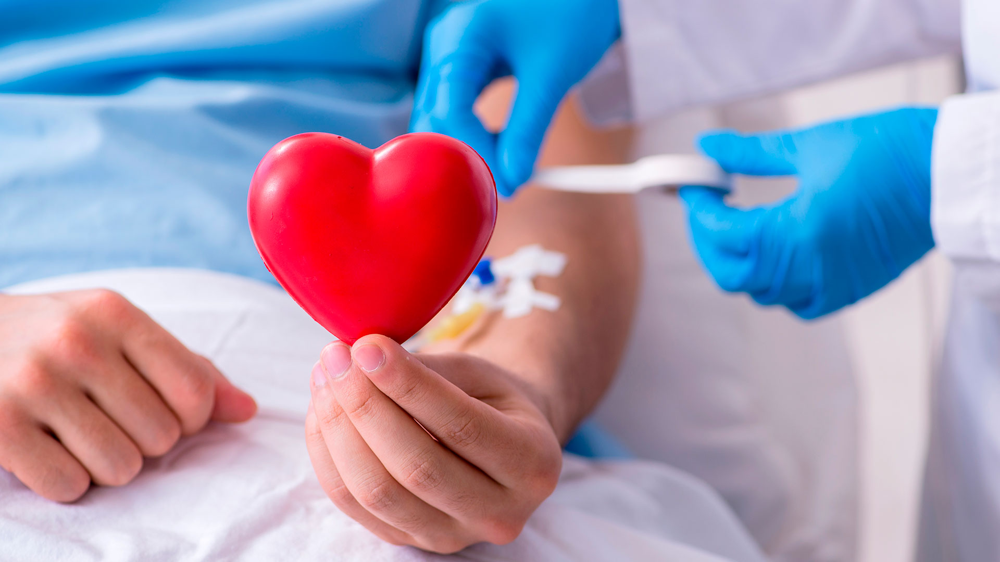
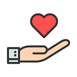

Donar Salva Vidas

¿Cómo puedes ayudar?
La donación de médula ósea es un proceso que puede marcar la diferencia en la vida de personas que luchan contra enfermedades graves de la sangre. Aquí hay algunas formas en las que puedes ayudar:
- Regístrate como donante de médula ósea en un registro local o nacional.
- Participa en eventos y campañas de concientización sobre la donación de médula ósea.
- Comparte información sobre la donación de médula ósea en tus redes sociales y entre tus amigos y familiares.
- Considera hacer una donación monetaria a organizaciones que apoyan la investigación y el acceso a tratamientos relacionados con enfermedades de la sangre.
Incluso si no eres compatible con un paciente específico, tu registro como donante podría ser valioso para futuros casos. Cada registro cuenta y cada donante potencial es una esperanza de vida para alguien en necesidad.
Sobre la Donación de Sangre
La donación de sangre es un acto voluntario y generoso que puede salvar vidas y mejorar la salud de las personas que la necesitan. Aquí hay algunos datos importantes sobre la donación de sangre:
- La sangre donada se utiliza para tratar a pacientes en situaciones de emergencia, personas con enfermedades crónicas, mujeres embarazadas, víctimas de accidentes y muchas otras situaciones médicas.
- La sangre humana no se puede fabricar artificialmente, por lo que la donación de sangre es esencial para mantener los suministros suficientes.
- Antes de la donación, se realizan exámenes médicos rigurosos para garantizar la elegibilidad del donante y la seguridad del receptor.
- El proceso de donación de sangre es seguro y generalmente toma alrededor de 10-15 minutos. Después de la donación, se proporcionan refrigerios y se recomienda descansar antes de reanudar las actividades diarias.
- La donación de sangre es un acto anónimo y confidencial. La información personal del donante se mantiene en estricta privacidad.
¡Tu donación de sangre puede marcar la diferencia en la vida de alguien! Considera convertirte en donante y ayudar a quienes más lo necesitan.
¿Quiénes pueden donar Medula Ósea?
No todo el mundo puede ser donante de médula ósea. Clásicamente se ha dicho que podía ser donante voluntario cualquier persona con buena salud y con una edad comprometida entre los 18 y 55 años. Sin embargo, se ha comprobado que la probabilidad de éxito del transplante guarda una estrecha relación con la edad del donante. Cuanto más joven es éste, mejores son los resultados. Eso ha provocado que, de forma progresiva, se vaya limitando la edad máxima de los donantes a los 40 años.
El donante voluntario deberá aceptar:
- Facilitar sus datos básicos (edad, dirección, teléfono y breve historial clínico) y que éstos, junto a los de compatibilidad, sean incluidos en el Registro de Donantes de Médula Ósea (REDMO).
- Que le sea extraída una muestra de sangre para estudiar sus características de histocompatibilidad.
- Que una pequeña cantidad de la muestra de sangre sea guardada en el laboratorio para poder ampliar el estudio en caso de aparecer un paciente compatible.
Contraindicaciones de la donación de médula ósea
La donación de médula ósea está contraindicada en personas que padecen determinadas enfermedades:
- Hipertensión arterial no controlada.
- Diabetes mellitus insulinodependiente.
- Enfermedad cardiovascular, pulmonar, hepática, hematológica u otra patología que suponga un riesgo sobreañadido de complicaciones durante la donación.
- Enfermedad tumoral maligna, hematológica o autoinmune que suponga riesgo de transmisión para el receptor.
- Infección por virus de la hepatitis B o C, virus de la inmunodeficiencia adquirida (SIDA) o por otros agentes potencialmente contagiosos.
- Algún factor de riesgo de SIDA (anticuerpos anti-VIH positivos, drogadicción por vía intravenosa, relaciones sexuales múltiples, ser pareja de uno de los anteriores, ser hemofílico o pareja sexual de hemofílico, lesiones con material contaminado en el último año).
- Haber sido dado de baja definitiva como donante de sangre.
- Tener antecedentes de enfermedad inflamatoria ocular (iritis, episcleritis) o fibromiálgia.
- Tener antecedentes o factores de riesgo de trombosis venosa profunda o embolismo pulmonar.
- Recibir tratamiento con litio.
- Tener recuentos de plaquetas inferiores a 120.000 ml.
Hay otras contraindicaciones que son de carácter temporal:
- Estar embarazada o amamantando a su hijo
- Estar sometido a tratamientos anticoagulantes o antiagregantes, en función de la duración de los mismos.
Beneficios de la Donación de Médula Ósea
-
Salva vidas
La donación de médula ósea puede marcar la diferencia entre la vida y la muerte para pacientes con enfermedades graves de la sangre, como la leucemia.
-
Contribuye a la comunidad
Al donar médula ósea, estás brindando una oportunidad única para ayudar a alguien en necesidad y hacer una diferencia positiva en la vida de otra persona y sus seres queridos.
-
No tiene efectos negativos para el donante
La donación de médula ósea es segura y no tiene efectos negativos duraderos para el donante. El cuerpo puede regenerar y reemplazar las células donadas.
-
Puedes ser un héroe
Convertirse en donante de médula ósea te brinda la oportunidad de ser un verdadero héroe y tener un impacto duradero en la vida de alguien que lucha contra una enfermedad grave.
CONOCE MI HISTORIA. Testimonios de donantes de médula ósea y transplantados
La Argentina, alcanzó un récord histórico de donantes de médula ósea en 2022.
Lo infomó el INCUCAI. Durante el 2022 se realizaron mas de 91 colectas, la cifra más alta obtenida desde la creación del Registro Nacional de Células Progenitoras Hematopoyéticas. Los detalles y los testimonios de este hito nacional.
Martín, 37 años
Es de Santa Rosa, La pampa, y es uno de los dontantes de 2022. "Todo comenzó en 2018 cuando, a partir de una campaña de búsqueda de donantes, decidí colaborar y aportar mi granito de arena. El trámite de inscripción fue muy sencillo. Me acerqué al hospital de mi ciudad y dije que quería ser donante. Doné sangre y quedé inscripto en el registro. Tres años después me llamaron desde el INCUCAI para comentarme que había una persona que era compatible conmigo que necesitaba un transplante y me preguntaron si quería ser donante. Así que no dudé, dije que si!!!"
"A partir de ahí, me explicaron cómo era el proceso, me sacaron todas las dudas. Elegí hacer donación a través del método de sangre periférica. Luego tuve que viajar a hacerme unos estudios previos y finalmente hace unos días fui a Buenos Aires, en donde me conectaron a una máquina para poder extraer la médula ósea de la sangre. Fue muy sencillo. Un prodecimiento simple, rápido, no fue molesto para nada.
"La sensación que me quedó después de haber donado médla fue de gran satisfacción a través de un gesto simple y rápido se puede hacer algo tan importante y valioso como darle una oportunidad de seguir viviendo a otra persona, que puede ser de nuestro país o de cualquier luger del mundo".
Enrique, 17 años
"Soy una Quimera" afirma Enrique.
"Con mis 17 años, me dieron la fatídica noticia de que tenía un linfoma de burkitt, el cual después de superarlo y por un exceso de quimioterápia degeneró en una leucemia mieloblástica aguda, con tan solo 20 años. Después de una segunda batalla larga y dificil, se decidió que necesitaba una nueva médula ósea.
"Una quimera por definición es un ser mitológico cuyo cuerpo es una composición híbrida entre varios animales. La realidad es que las quimeras no son tan mitológicas como creemos. Yo ahora mismo soy uno de esos seres mitológicos, yo soy una composición de células de dos personas distintas. Alguien, en algun lugar del planeta desidió regalarme un trocito de el altruistamente y gracias a eso puedo estar aquí contando mi historia".
"Hoy tengo 25 años y la enfermedad parece irse convirtiendo en un recuerdo amargo pero lejano y, sin embargo, pase lo que pase siempre llevaré dentro de mi un trocito de esa persona que desinteresadamente, decidió salvar mi vida."
Ser Donante
Si estás interesado en convertirte en donante de médula ósea y salvar vidas, completa el siguiente formulario y nos pondremos en contacto contigo: